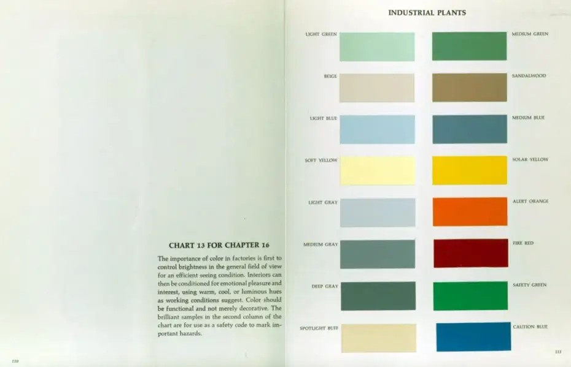

The fatigue-reducing seafoam field for app backgrounds, editor canvases, dashboards, and long reading surfaces.
Industrial color, translated for software
Birren Industrial Colors
A practical application palette centered on fatigue-reducing seafoam green, white instrument panels, and the chart's brilliant safety colors.
History & significance
Color as a tool, not decoration.

The industrial plant chart associated with Faber Birren presents color as part of the working environment: surfaces should control brightness, support efficient seeing, and reduce unnecessary strain. Its left column is quiet and architectural. Its right column is brilliant and coded for safety. In that setting, seafoam green also works by making white instrument panels easy to find without surrounding them in glare.
This software adaptation follows the same split. The soft seafoam Light Green becomes the default working field because it is the color the chart most strongly associates with visual comfort. Instrument White becomes the main panel color: the interface equivalent of a white gauge, dial, or control panel sitting inside a green-painted room. Beige is still present, but as a warm archival neutral rather than the default surface. The stronger greens, blues, yellow, orange, and red are held back for status, command, warning, success, and failure.
System principles
A factory chart becomes an interface chart.
Seafoam is the room.
Light Green is not an accent. It is the default environment for reading and thinking, chosen because the source chart frames it as visually restful and because it gives white panels a clear edge.
White carries the instruments.
Instrument White is the primary card, sidebar, modal, and form surface. Beige is intentionally secondary, useful for notes and archival warmth rather than the main panel plane.
Safety colors stay semantic.
Solar Yellow, Alert Orange, Fire Red, Safety Green, and Caution Blue are vivid by design, so the palette uses them for meaning rather than decoration.
The sixteen chart chips
Original colors from the scan.
Stable operational green for routine positive states, strings, confirmed work, and secondary accents.
Warm neutral light for annotations, low-priority notes, archival side material, and gentle secondary surfaces.
Earthy bridge between neutral and warning for types, tags, metadata, annotation, and low-priority caution.
Cool daylight balance for selections, information surfaces, hover states, and calm emphasis.
Subdued control blue for primary controls, functions, navigation accents, selected tabs, and UI chrome.
Readable highlight without alarm for search matches, inline notes, tutorials, and temporary highlights.
Brilliant visibility for warnings, focus rings, active search hits, required fields, and cursor-line markers.
Cool quiet separator for secondary backgrounds, disabled controls, dividers, and empty states.
Escalation between warning and danger for modified files, destructive previews, alerts, and numeric emphasis.
Middle value for muted text, inactive UI, borders, minimaps, and terminal bright black.
Compressed hazard signal for errors, failed jobs, delete actions, security alerts, and diff deletions.
Green-charcoal anchor for primary text, title bars, high-emphasis outlines, deep accents, and terminal black.
Brilliant go/safe signal for passing tests, diff additions, success badges, and enabled indicators.
Warm reflected light for raised highlights, headings, warm badges, and terminal normal white.
Saturated instruction blue for links, command emphasis, important information, keywords, and actionable text.
Interface roles
What each family does in an application.
Light Green is the default work field. It should cover the most pixels and stay calm under long focus.
Instrument White carries cards, sidebars, controls, and modals so they read like white panels against a seafoam room.
Deep Gray provides legible text without black-on-white glare, and doubles as the palette's deep structural accent.
Light Blue marks selected and related content with a cool signal that remains non-alarming.
Beige remains useful for notes, tags, and archival side matter, but it no longer carries the main interface plane.
Solar Yellow is intentionally bright. Keep it scarce for focus, warnings, and required attention.
Fire Red is reserved for failure, deletion, security, and irreversible or urgent states.
Ports & formats
One source, many applications.
The repository follows the Flexoki/Nord pattern: keep primitive colors and semantic roles in a static source file, then present them as importable formats for tools and applications.